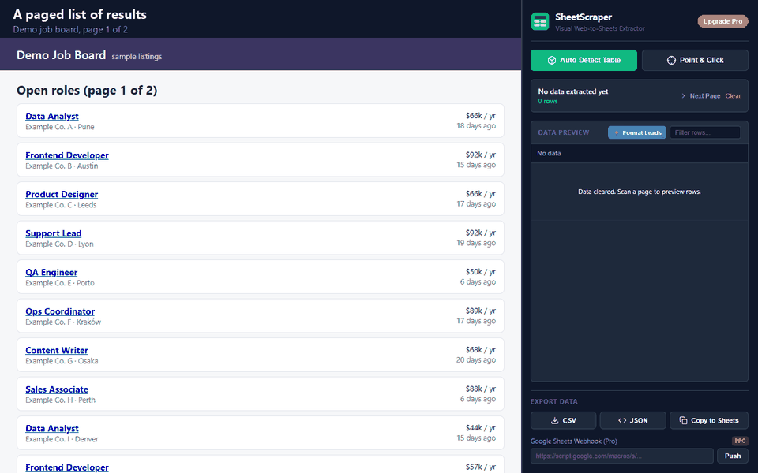

I built SheetScraper, so I am biased. Here is what each tool does, including where Instant Data Scraper is the better choice.
Add to Chrome — free
Instant Data Scraper facts come from its public Chrome Web Store listing as read on 2026-10-16 (version 1.9.2). "Not listed" means the listing does not mention it, not that it is missing. SheetScraper facts describe version 1.1, live now.
| Feature | Instant Data Scraper | SheetScraper |
|---|---|---|
| Price | Free (the listing says it is completely free) | Free up to 50 rows per scan. Pro: $30 once or $9/month for unlimited rows |
| Users and rating | 1,000,000 users, 4.9 stars from about 7.8K ratings | New (launched 2026-10-16), no ratings yet |
| Finds data automatically | Yes | Yes (Auto-Detect) |
| Pick items by clicking one | Not listed | Yes (Point & Click) |
| Where you see the data | Preview with copy and paste | Side panel that stays open next to the page, with a filter box |
| Next page / pagination | Yes, automatic, with delay and wait settings | Yes. Collect pages clicks Next for you, up to 50 pages, merged into one table without duplicate rows. Next Page still scans one page at a time |
| Infinite scroll | Yes | Yes. Collect pages scrolls and collects when there is no Next link |
| Export | Excel (XLS, XLSX) and CSV | Yes. Excel (.xlsx), CSV, JSON and Copy to Sheets |
| Rename or filter columns | Yes | Yes. Column editor: rename, hide, reorder, trim spaces, remove duplicates. Filter box for rows |
| Scrape history | Not listed | Yes. Last 20 scrapes kept on your device |
| Send rows to a webhook | Not listed | Yes, Pro (for example a Google Apps Script) |
| Privacy | Listing says scraped data does not leave your browser | Runs in your browser; no analytics, no ads, no servers of its own |
It is free with no row limit and no paid tier, it crawls many pages and infinite scroll on its own, it exports Excel, and a million people have used it for years. If that is all you need, use it. You do not need to pay for anything.
Side panel preview. The data sits next to the page, so you can scan, check and rescan without switching tabs.
Point & Click. When automatic detection picks the wrong block, click the item you actually want and SheetScraper selects every match.
JSON and webhook push. Developers can push rows straight into a Google Apps Script or their own endpoint (Pro).
A one-time price. Pro is $30 once for lifetime. No credits, no trial, no renewal on lifetime.
Also in SheetScraper: Collect pages, Excel export, a column editor, history of your last 20 scrapes, and image thumbnails with copyable image URLs.
Partly. Every SheetScraper feature except webhook push works for free, up to 50 rows per scan. Instant Data Scraper has no row limit. SheetScraper Pro removes the limit for $30 once or $9 per month.
No. Neither tool shares settings with the other. Both read the page you have open, so there is nothing to move.
Both listings say your data stays in your browser. SheetScraper has no analytics, ads or servers of its own and asks for access to a site only when you click a scan button.
I built SheetScraper because copying tables by hand wastes an afternoon. Install it, open a page, click Auto-Detect.
Add to Chrome — free